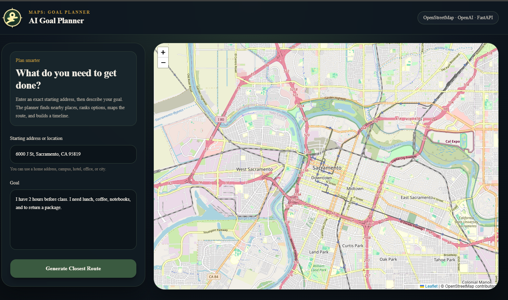

Maps: Goal Planner
An AI-powered route planning application that transforms natural-language goals into ranked destinations, optimized multi-stop routes, alternatives, timelines, and clear explanations.
Role
Full-Stack AI Developer
Category
AI Navigation
Stack
Next.js, FastAPI, OpenAI, Leaflet

AI
Intent extraction
Maps
Interactive routes
API
Multiple services
Route
Stop optimization
Project overview
Maps: Goal Planner is an AI-powered route planning application that transforms natural-language goals into optimized multi-stop trips.
Instead of asking users where they want to go, the application asks what they want to accomplish. The user describes a goal in plain English, and the system determines the required errands, finds relevant nearby businesses, ranks the strongest options, optimizes the stop order, and produces an efficient route.
This project explores how modern AI can shift navigation from destination-based planning to intent-based planning.
The problem
Traditional navigation applications require users to know every destination before planning a route.
For example, a user might say: “I have two hours before class. I need coffee, notebooks, lunch, and to return a package.”
A traditional maps application expects the user to search for each destination separately, compare businesses, choose each location, and manually determine the most efficient order.
- Think of every destination individually
- Search for each destination separately
- Compare businesses and nearby options
- Choose the best location for every errand
- Manually optimize the complete trip
The solution
Maps: Goal Planner moves the planning work from the user to the AI. The user enters a starting address and describes the overall objective.
OpenAI converts the request into structured intents. The backend searches nearby businesses, ranks candidates, stores alternatives, determines the stop order, and generates the final route using OSRM.
- Understands the user’s natural-language goal
- Breaks the request into actionable errands
- Searches for relevant nearby businesses
- Ranks candidate destinations
- Suggests alternative locations
- Optimizes the multi-stop route
- Generates a trip timeline and explanation
AI goal understanding
Converts unstructured goals into structured errands without requiring users to complete predefined forms.
Intelligent place ranking
Scores candidate locations using distance, category match, intent relevance, search quality, and confidence.
Route optimization
Orders destinations efficiently, reduces unnecessary backtracking, and produces an interactive driving route.
Alternative recommendations
Stores multiple candidates for each stop so users can swap businesses without restarting the planning workflow.
Interactive map
Visualizes numbered waypoints, the starting marker, route geometry, dynamic fitting, and responsive map controls.
Smart timeline
Produces the recommended order, estimated stop durations, travel summary, finish time, and AI-generated reasoning.
Technical architecture
The application uses a service-oriented architecture that separates the Next.js interface from the FastAPI backend and its external integrations.
User
│
▼
Next.js Frontend
│
▼
FastAPI Backend
│
├── OpenAI
│ Intent extraction and structured planning
│
├── OpenStreetMap / Nominatim
│ Geocoding and nearby place discovery
│
└── OSRM
Route generation and optimizationTechnology stack
Frontend
- Next.js
- React
- TypeScript
- Tailwind CSS
- Leaflet
- React Leaflet
Backend
- FastAPI
- Python
- OpenAI API
- Requests
- RESTful service architecture
External services
- OpenAI for intent extraction and reasoning
- OpenStreetMap for geographic data
- Nominatim for geocoding and place search
- OSRM for route generation and optimization
Deployment
- Frontend deployed on Netlify
- Backend deployed on Render
Goal input
The user enters a starting location and describes the complete objective in natural language.
Intent extraction
OpenAI analyzes the request and converts it into structured categories such as lunch, coffee, office supplies, and shipping.
Place discovery
The backend searches nearby businesses for every extracted intent and gathers multiple candidate locations.
Ranking
Each candidate is scored using distance, intent relevance, category quality, search confidence, and business match.
Route optimization
The selected stops are reordered to reduce unnecessary travel and OSRM generates the route geometry.
Final plan
The frontend displays the interactive map, stops, alternatives, timeline, route summary, and AI explanation.
Engineering highlights
- Natural-language goal planning
- Dynamic AI intent extraction
- Structured LLM output
- Dynamic category mapping
- Nearby business discovery
- Business relevance ranking
- Multi-stop route optimization
- Interactive map rendering
- Alternative stop selection
- Responsive frontend implementation
- Modular FastAPI backend architecture
- Integration of multiple external APIs
Challenges solved
- Converting unstructured user language into actionable tasks
- Mapping abstract intent to real-world business categories
- Ranking nearby businesses using multiple relevance signals
- Handling ambiguous and incomplete user requests
- Optimizing multi-stop routes while avoiding backtracking
- Keeping map markers synchronized with alternate selections
- Combining AI, geocoding, search, and routing APIs
- Separating frontend, backend, and service responsibilities
Future improvements
- User accounts and saved routes
- Personalized business preferences
- Live traffic information
- Business hours awareness
- Ratings and review integration
- Calendar integration
- Voice-based planning
- Price-aware recommendations
- Dynamic rerouting
- Multi-modal transportation support
- Collaborative trip planning
Impact
Maps: Goal Planner demonstrates how AI can transform navigation from a destination-based experience into an intent-based planning system.
By allowing users to express what they want to accomplish rather than where they want to go, the application reduces planning effort and creates a more conversational experience.
The project serves as a proof of concept for how mapping platforms could evolve into proactive assistants that understand goals, recommend destinations, explain decisions, and optimize complete journeys.
Skills demonstrated
More work
Explore more AI and software projects
View my projects in AI automation, multi-agent systems, computer vision, career tools, and machine learning.